Nhìn ảnh rồi mới viết. Ô Câu hỏi và Đáp án đã được mô hình
điền sẵn nháp — nháp sinh từ chữ OCR quanh hình, mô hình
KHÔNG nhìn thấy hình, nên phải kiểm chứ đừng tin.
Sửa thoải mái, viết lại hẳn cũng được: câu cuối cùng là của bạn.
Hai ràng buộc duy nhất — (1) phải trả lời được nhờ nhìn hình, không phải
nhờ đọc chữ trên trang; (2) đáp án đúng với thứ thực sự có trong hình.
Khi nào tick “Bỏ khung cắt này”: chỉ khi bản thân khung cắt hỏng,
không liên quan tới câu hỏi. Bốn trường hợp:
(a) cắt lấn hoặc cắt thiếu — nuốt cả đoạn văn, hoặc mất một nửa sơ đồ;
(b) không phải hình — cắt nhầm bảng, khung chữ, hộp “Em có biết”;
(c) không hỏi được — icon, logo, ảnh trang trí không mang nội dung khoa học;
(d) trùng với một ô khác trong phiếu.
Ô lý do bỏ không đi vào bộ test — nó để sửa ETL, nên ghi ngắn là đủ
(“cắt lấn”, “là bảng”, “trùng ô trên”).
Bỏ bao nhiêu cũng được, số thiếu sẽ được bù bằng hình khác.
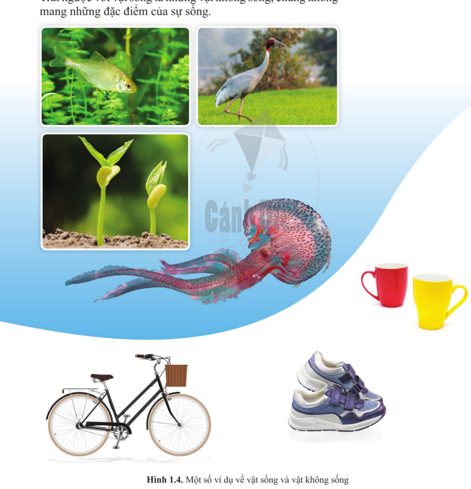
SGK_KHTN_6_CD · trang in 9 ·
Hình 1.4mô hình tự khai KHÔNG chắc
chú thích máy đọc: Hình 1.4. Một số ví dụ về vật sóng và vật không sông KHOA HỌC TỰ NHIÊN 6 ..
chữ trong hình: Tớ ẴSốivy CC: TH TƯ NNGL\Y (CÓ đc VN N6G MGIUNAOANEGSL.ESĐWGA TƯ GUYNGENGSZNR:. vs. ..aaCC.. aðốổẽốỐ cẽ = mang những đặc điêm của sự sông. Hình 1.4. Một số ví dụ về vật sông và vật không sống
Mô hình tự khai không chắc về ô này — đọc kỹ hơn bình thường.
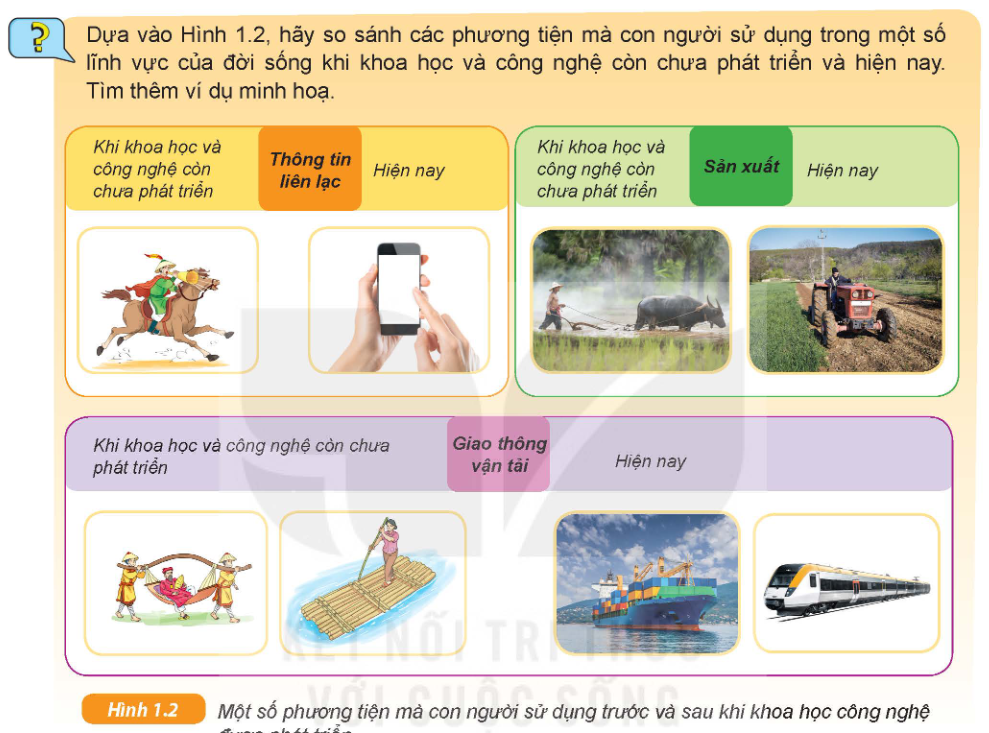
SGK_KHTN_6_KNTT · trang in 9 ·
Hình 1.2mô hình tự khai KHÔNG chắc
chú thích máy đọc: Hình 1.2, hãy so sánh các phương tiện mà con người sử dụng trong một số lĩnh vực của đời sống khi khoa học và công nghệ còn chưa phát triển và hiện nay. Tìm thêm ví dụ minh hoạ. Khi khoa h
chữ trong hình: Dựa vào Hình 1.2, hãy so sánh các phương tiện mà con người sử dụng trong một số lĩnh vực của đời sống khi khoa học và công nghệ còn chưa phát triển và hiện nay. Tìm thêm ví dụ minh hoạ. Khi khoa học và Khi khoa học và cô
Mô hình tự khai không chắc về ô này — đọc kỹ hơn bình thường.
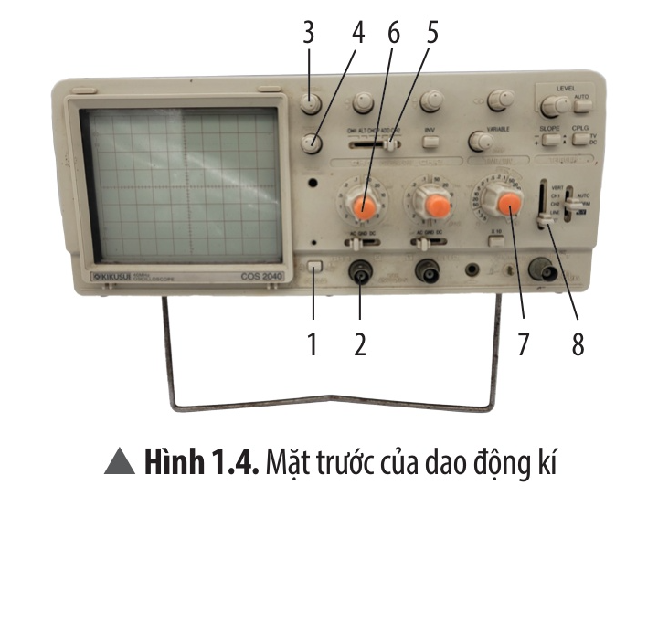
SGK_KHTN_7_CTST · trang in 11 ·
Hình 1.3mô hình tự khai KHÔNG chắc
chú thích máy đọc: Hình 1.3. Một số dạng đồ thị của tín hiệu âm Để tìm hiểu những tính chất của âm, người ta mắc hai đầu micro với chốt tín hiệu vào của đao động kí. Micro sẽ biến đổi tín hiệu âm truyền tới th
chữ trong hình: tín hiệu điện theo thời gian. /yưực #) À Hình 1.3. Một số dạng đồ thị của tín hiệu âm
Mô hình tự khai không chắc về ô này — đọc kỹ hơn bình thường.
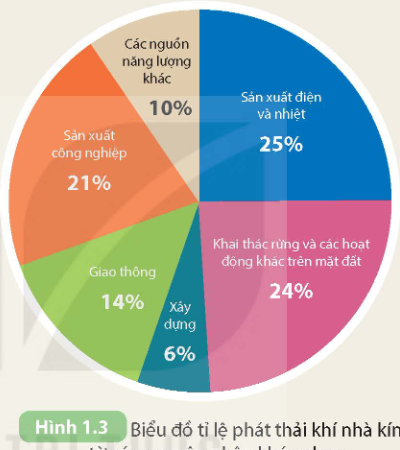
SGK_KHTN_7_KNTT · trang in 10 ·
Hình 1.3mô hình tự khai KHÔNG chắc
chú thích máy đọc: Hình 1.3 và cho biết nguyên nhân nào làm phát thải khí nhà kính nhiều nhất. Hãy tìm hiểu và để xuất biện pháp giảm sự phát thải khí carbon dioxide từ nguồn này. 2. Tìm hiểu thông tin trên s
chữ trong hình: Cácnguồn năng lượng khác Sản xuất điện. % h 10% và nhiệt 25% Xây dựng 6% Biểu đồ tỉ phát thải khí nhà kír
Mô hình tự khai không chắc về ô này — đọc kỹ hơn bình thường.
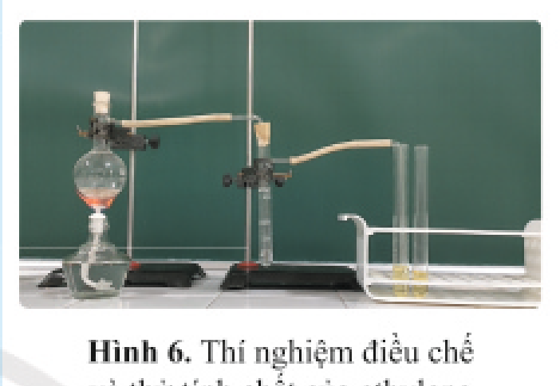
SGK_KHTN_9_CD · trang in 6 ·
Hình 6mô hình tự khai KHÔNG chắc
chú thích máy đọc: Hình 6. Thi nghiệm điều chế —— và thử tính chất của ethylene Ống dẫn bằng cao su _. „ Được tạo từ vật liệu đàn hồi, có dạng ống dẫn.
chữ trong hình: Hình 6. Thí nghiệm điều chế
Mô hình tự khai không chắc về ô này — đọc kỹ hơn bình thường.
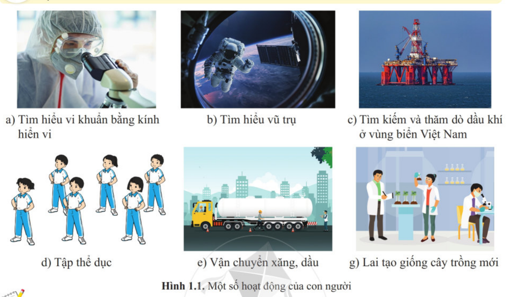
SGK_KHTN_6_CD · trang in 5 ·
Hình 1.1
chú thích máy đọc: hình 1.1 và cho biết những hoạt động nào là hoạt động nghiên cứu khoa học tự nhiên. a) Tìm hiểu vi khuẩn bằng kính b) Tìm hiểu vũ trụ c) Tìm kiếm và thăm dò dầu khí hiên vi ở vùng biên Việt
chữ trong hình: a) Tìm hiểu vi khuẩn bằng kính b) Tìm hiểu vũ trụ c) Tìm kiếm và thăm dò dầu khí hiên vi ở vùng biên Việt Nam ò NT ` ! % d) Tập thê dục e) Vận chuyên xăng, dầu ø) Lai tạo giống cây trồng mới Hình 1.1. Một số hoạt động củ
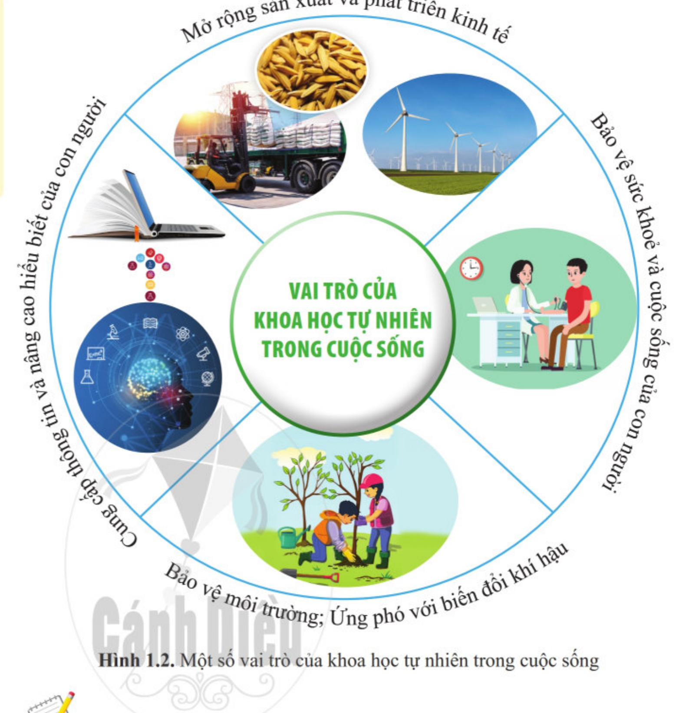
SGK_KHTN_6_CD · trang in 6 ·
Hình 1.2
chú thích máy đọc: hình 1.2 wð và cho biết khoa học tự nhiên có vai trò như thế nào trong cuộc sống của con người. Cho ví dụ minh hoa. qng sản Xuất Về Phát tiện At 1n VAI TRÒ CỦA KHOA HỌC TỰ NHIÊN TRONG CUỘC
chữ trong hình: 2g SỐM S——£0' Hiển: wwð cò kửn, sẻ VAI TRÒ CỦA KHOA HỌC TỰ NHIÊN TRONG CUỘC SỐNG
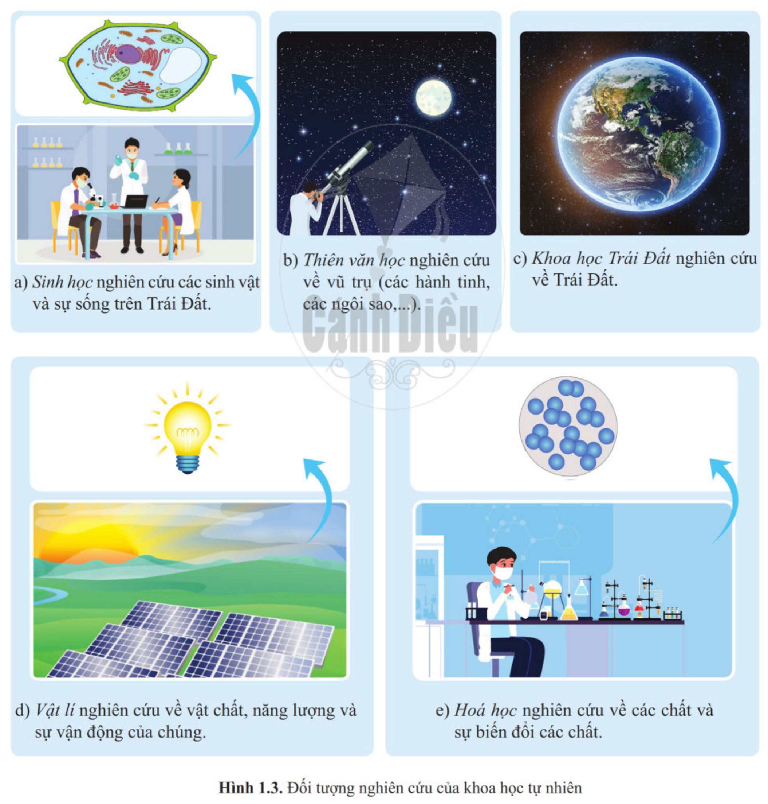
SGK_KHTN_6_CD · trang in 7 ·
Hình 1.3
chú thích máy đọc: Hình 1.3. Đói tượng nghiên cứu của khoa học tự nhiên ađds>œ>œ——<= KHOA HỌC TỰ NHIÊN 6
chú thích máy đọc: Hình 1.8. Thiết bị sản xuất dược phẩm TỤ Em hãy kể tên một số hoạt động trong thực tế có đóng góp vai trò của khoa học tự nhiên. À Hình 1.9. Sử dụng năng lượng gió để À Hình 1.10. Thạch
chữ trong hình: khác nhau. À Hình 1.9. Sử dụng năng lượng gió để À Hình 1.10. Thạch nhũ tạo ra trong hang động
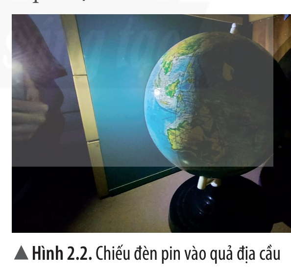
SGK_KHTN_6_CTST · trang in 8 ·
Hình 2.1
chú thích máy đọc: Hình 2.1. Sự nảy mầm của hạt đậu À Hình 2.2. Chiếu đèn pin vào quả địa cầu @) Khoa học tự nhiên bao gồm một số lĩnh vực chính như: WK laổẤ (AO(A 24a xrỔ XyrÀtC hết huoa‹y hỒầÂt xrÀ^a đa xẻẽ
chữ trong hình: À Hình 2.2. Chiếu đèn pin vào quả địa cầu
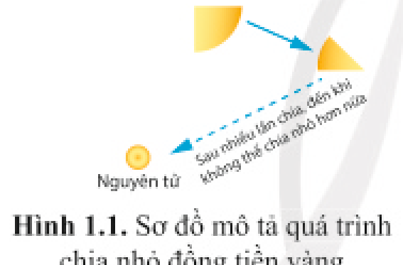
SGK_KHTN_7_CD · trang in 10 ·
Hình 1.1
chú thích máy đọc: Hình 1.1. Sơ đỗ mô tả quả trình chia nhỏ đẳng tiền văng AÃ VU HLE KH MAI TT. (INEVIN: 1. ÝƯJ LG MÃ GÀ] xiên ÀjGI(ƑE LÁ1Y/E ĐẦU: LH ni ng Đê-mô-crít (Demoeritus) cho rằng nều chia nhỏ nhiều l
chữ trong hình: Hình 1.1. Sơ để mô tả quả trình “ha: xxx h: zycx BÊn
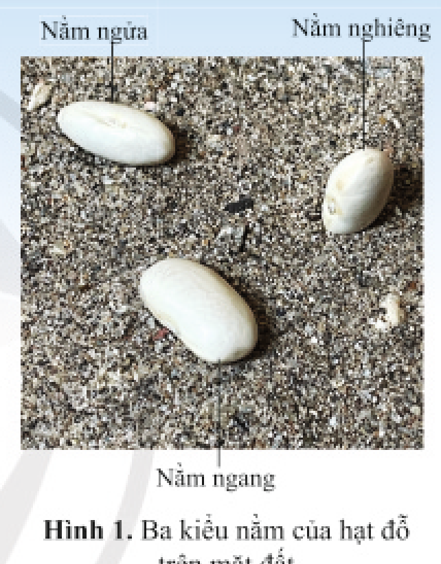
SGK_KHTN_7_CD · trang in 4 ·
Hình 1
chú thích máy đọc: hình 1). Liệu kiểu nằm của hạt có ảnh hưởng đến khả năng nảy mầm của nó hay không? Năm nưửa Năm nghiêng Đ
chữ trong hình: Năm nưửa Năm nghiêng Năm ngang Hình 1. Ba kiêu năm của hạt đỗ
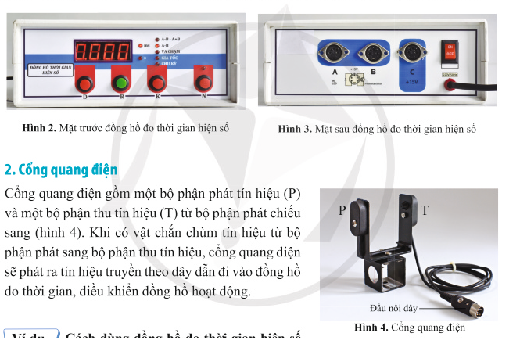
SGK_KHTN_7_CD · trang in 8 ·
Hình 4
chú thích máy đọc: hinh 3). In TỐC EHU KỸ Hình 2. Mặt trước đông hỗ đo thời gian hiện số Hình 3. Mặt sau đồng hỗ đo thời gian hiện số 2. Cổng quang điện Công quang điện gôm một bộ phận phát tín hiệu (P) và
chữ trong hình: HN HỦ TWỜN L2 ,HIỆN SỐ Hình 2. Mặt trước đông hỗ đo thời gian hiện số Hình 3. Mặt sau đồng hỗ đo thời gian hiện số 2. Cổng quang điện Công quang điện gôm một bộ phận phát tín hiệu (P) và một bộ phận thu tín hiệu (T} từ b
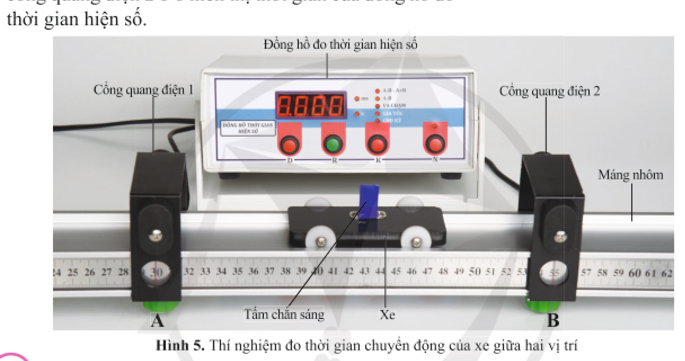
SGK_KHTN_7_CD · trang in 9 ·
Hình 5
chú thích máy đọc: Hình 5. Thí nghiệm đo thời gian chuyển động của xe giữa hai vị trí Quá trình tìm hiểu tự nhiễn bao qỗm các bước:
chữ trong hình: Hh -...ẻ.ẻ.....¬.ằ.. nh... ha ằẽốẽ.. ..,.. .,ố r... xẻ an. ru, cẻẻ.,:.,,.. ..n.ecnnn h thời gian hiện số. Công quang điện I Công quang điện 2 .__ ¿4 38 36 2728 « K5 5 š7 &W 39 6l) 6é? Hình 5. Thí nghiệm đo thời gian chuy
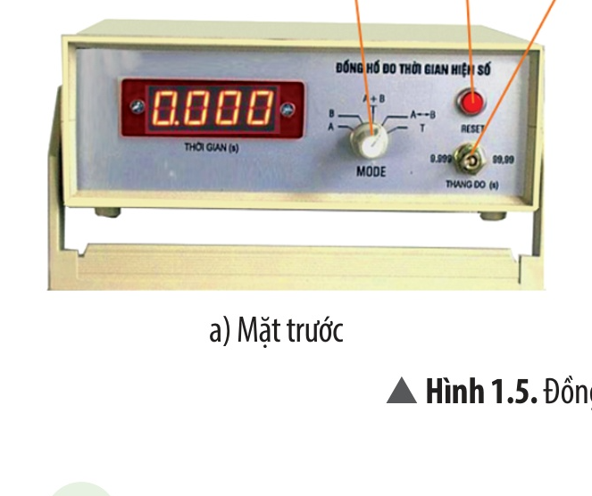
SGK_KHTN_7_CTST · trang in 12 ·
Hình 1.5
chú thích máy đọc: Hình 1.5. Đồng hồ đo thời gian hiện số 12
chữ trong hình: a) Mặt trước b) Mặt sau À Hình 1.5. Đồng hồ đo thời gian hiện số
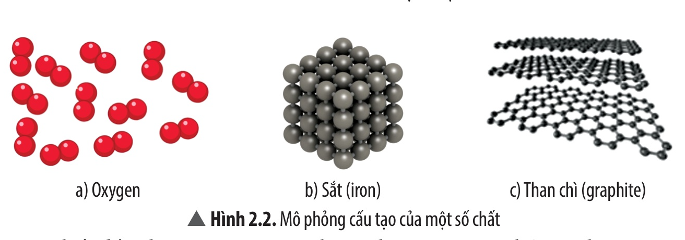
SGK_KHTN_7_CTST · trang in 14 ·
Hình 2.1
chú thích máy đọc: Hình 2.1. Kích thước của một số vật thể _ Ê° $ L °œ 2 Quan sát Hình 2.2, em hãy cho biết khí oxygen, sắt, than chì có đặc điểm chung dì về cấu tạo. a) 0xygen b) Sắt (iron) QThan chì (graphit
chữ trong hình: _ Ê° $ L °œ a) 0xygen b) Sắt (iron) 9Q Than dhì (graphite) À Hình 2.2. Mô phóng cấu tạo của một số chất
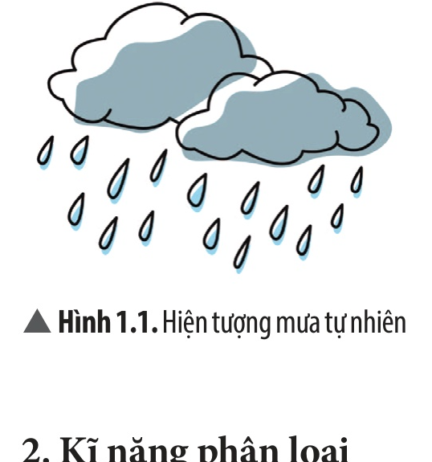
SGK_KHTN_7_CTST · trang in 9 ·
Hình 1.1
chú thích máy đọc: Hình 1.1. Hiện tượng mưa tự nhiên 2. Kĩ năng phân loại 1. Kĩ năng quan sát Việc quan sát được diễn ra hằng ngày, tuy nhiên quan sát khoa học là quan sát sự vật, hiện tượng hay quá trình diễn
chữ trong hình: HH ếT, s4 AÀ Hình 1.1. Hiện tượng mưa tự nhiên 1. Kĩ năng quan sát Việc quan sát được diễn ra hằng ngày, tuy nhiên quan sát khoa học là quan sát sự vật, hiện tượng hay quá trình diễn ra trong tự nhiên để đặt ra câu hỏi c
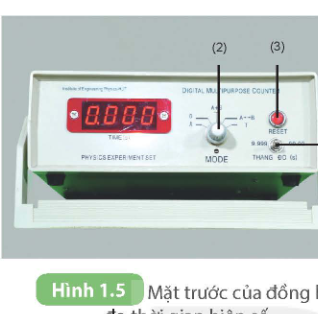
SGK_KHTN_7_KNTT · trang in 11 ·
Hình 1.5
chú thích máy đọc: (trống)
chữ trong hình: (CTED) vi tiuốc cú: ông!
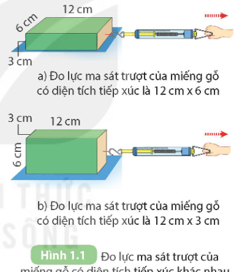
SGK_KHTN_7_KNTT · trang in 7 ·
Hình 1.1
chú thích máy đọc: Hình 1.1a và Hình 1.1b). Kéo lực kế từ từ cho tới khi vật bắt đầu chuyển động đều (lực kế chỉ một giá trị ổn định), thì đọc số chỉ của lực kế. Số chỉ của lực kế là độ lớn của lực ma sát tr
chữ trong hình: 12cm 3cm a) Đo lực ma sát trượt của miếng gỗ có diện tích tiếp xúc là 12 cm x6 cm 3cm 12cm b) Đo lực ma sát trượt của miếng gỗ có diện tích tiếp xúc là 12 cm x 3 cm me Đo lực ma sát trượt của
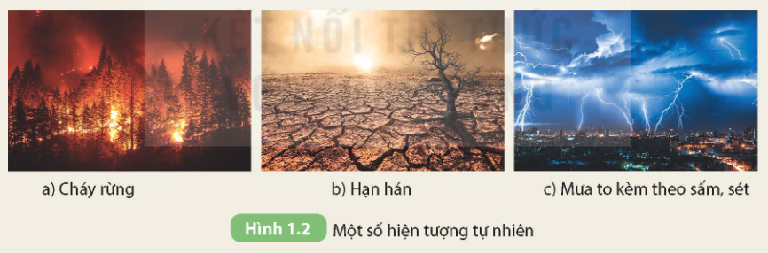
SGK_KHTN_7_KNTT · trang in 8 ·
Hình 1.2
chú thích máy đọc: Hình 1.2. a) Cháy rừng b) Hạn hán c) Mưa to kèm theo sấm, sét (CƯ 2) Mọt số hiện tượng tự nhiên 2. Kĩ năng liên kết
chữ trong hình: a) Cháy rừng b) Hạn hán c) Mưa to kèm theo sấm, sét (CÔ) Mọi số hiện tượng tự nhiên
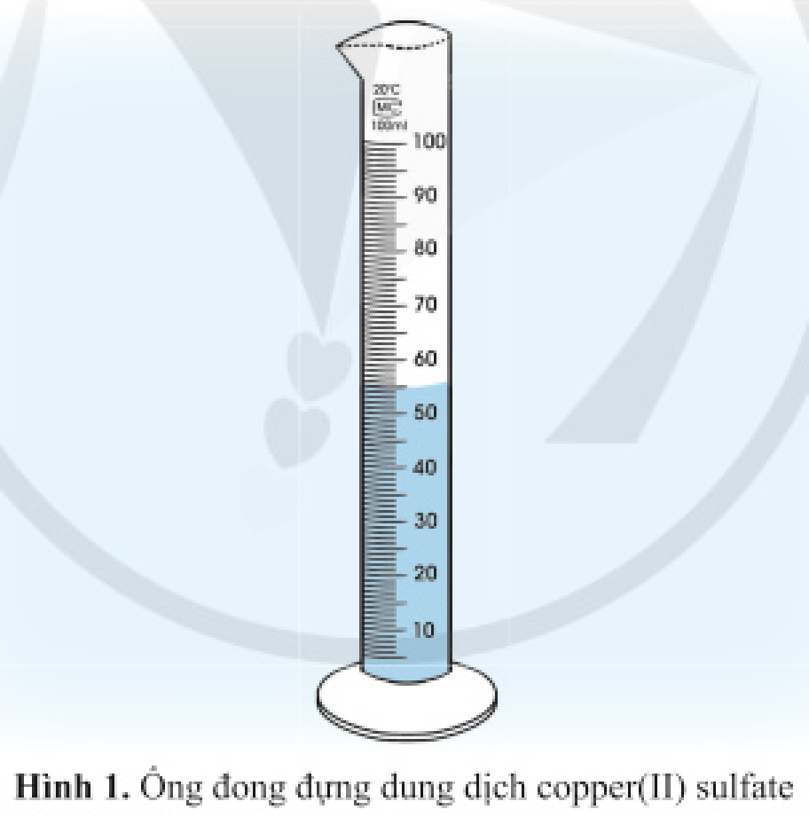
SGK_KHTN_8_CD · trang in 4 ·
Hình 1
chú thích máy đọc: hình 1), ghi lại thê tích ` của dung địch trong ống đong và báo cáo kết quả trước lớp. Hình I1. Ông đong đựng dung dịch copper(TT] sulfate I. MỘT SỐ DỤNG CỤ VÀ H0Á CHẤT TRONG MÔN KHOA HỌ
chữ trong hình: Hình 1. Ông đong đựng dung dịch copper(II) sulfate
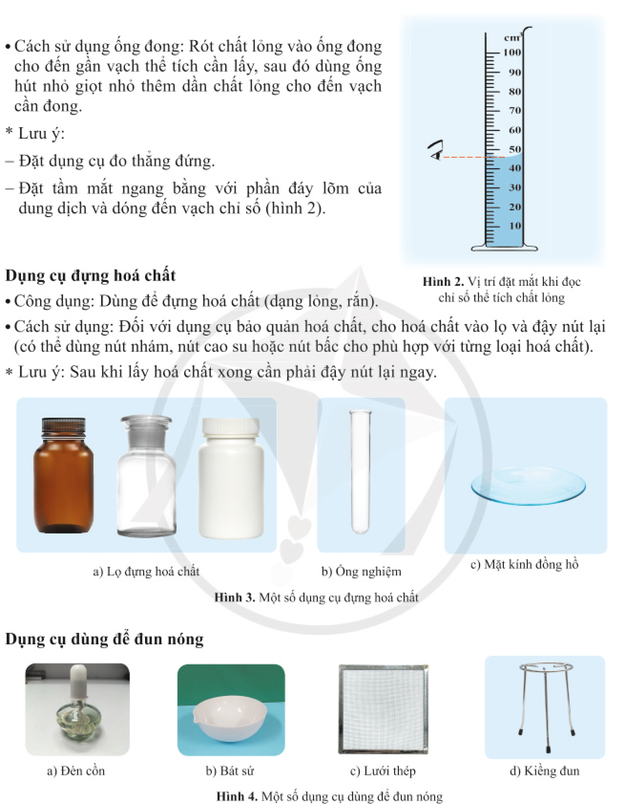
SGK_KHTN_8_CD · trang in 5 ·
Hình 4
chú thích máy đọc: hình 2}. z Ẫ Dụng cụ đựng hoá chât Hình 2. Vị trí đặt mắt khi đọc « Công dụng: Dùng đê đựng hoá chât (dạng lỏng, răn). chỉ số thể tích chât lòng «Cách sử dụng: Đôi với dụng cụ bảo quản h
chữ trong hình: » Cách sử dụng ống đong: Rót chất lỏng vào ông đong cho đến gần vạch thẻ tích cần lấy, sau đó dùng ông hút nhỏ giọt nhỏ thêm dân chất lỏng cho đến vạch cân đong. * Lưu ÿ: — Đặt dụng cụ đo thăng đứng. - Đặt tầm mất ngang,
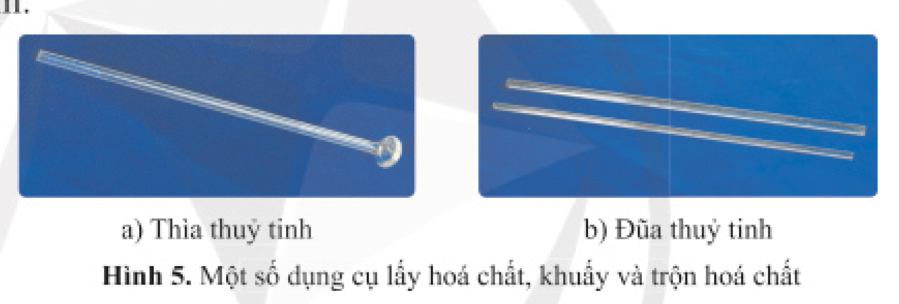
SGK_KHTN_8_CD · trang in 6 ·
Hình 5
chú thích máy đọc: Hình 5. Một số dụng cụ lầy hoá chất, khuấy và trộn hoá chất Dụng cụ giữ cô định và để ống nghiệm
chữ trong hình: a] Thia thuy tỉnh bị Đùa thuy tính Hình 5. Một sũ dụng cụ läy hoá chát, khuấy và trận hoa chất
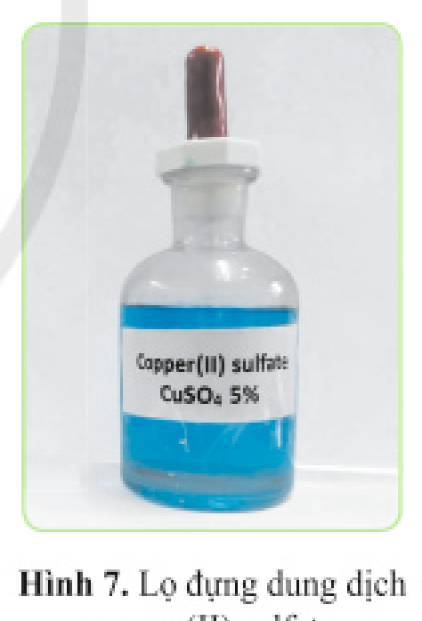
SGK_KHTN_8_CD · trang in 7 ·
Hình 7
chú thích máy đọc: Hình 7. Lọ đựng dung dịch
chữ trong hình: Hình 7. Lọ đựng dung dịch
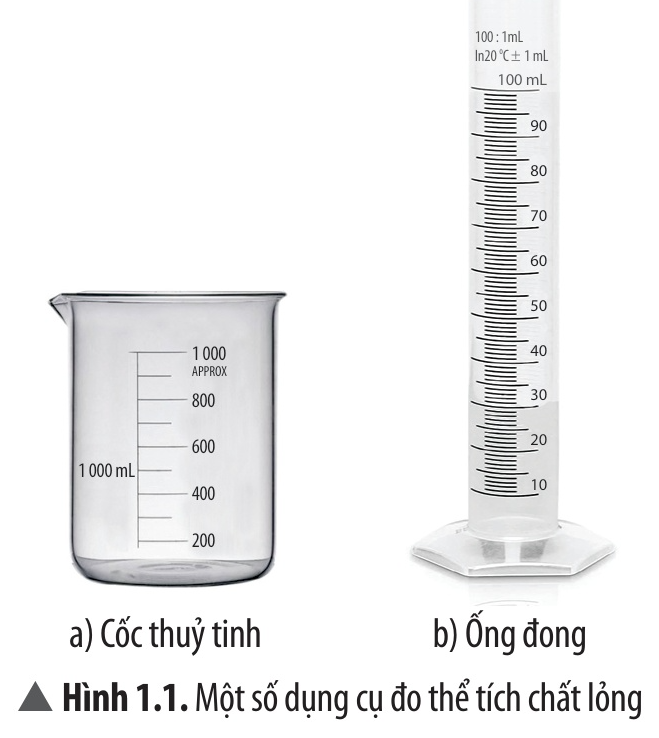
SGK_KHTN_8_CTST · trang in 6 ·
Hình 1.1
chú thích máy đọc: Hình 1.1. Một số dụng cụ đo thể tích chất lông Nhận biết được các loại dụng cụ thí nghiệm sẽ giúp học sinh sử dụng đúng mục đích, hiệu quả khi thực hành thí nghiệm. Sau đây là một số dụng cụ
chữ trong hình: 100: 1ml. In20*C+ 1ml. 100 mL. ` Z a) Cốc thuỷ tỉnh b) Ống đong À Hình 1.1. Một số dụng cụ đo thể tích chất lông
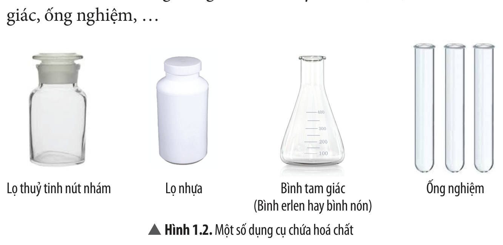
SGK_KHTN_8_CTST · trang in 7 ·
Hình 1.2
chú thích máy đọc: Hình 1.2. Một số dụng cụ chứa hoá chất Các thí nghiệm lượng nhỏ thường thực hiện trong ống nghiệm. Hoá chất lỏng cho: vào thường cÌ chiếm không quá 13 thể tích -..... 1 /. 14 sA% r£ ,4 A2 3
chữ trong hình: giác, ống nghiệm, ... J ca ¬>¬_ ấ Lọ thuỷ tinh nút nhám Lọ nhựa . .”. Bình tam giác (Bình erlen hay bình nón) À Hình 1.2. Một số dụng cụ chứa hoá chất «cà «+ Ẳ« Ống nghiệm
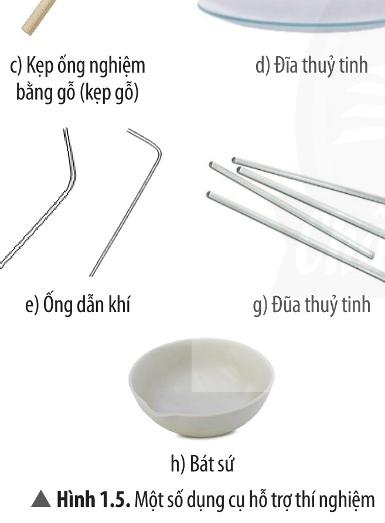
SGK_KHTN_8_CTST · trang in 8 ·
Hình 1.5
chú thích máy đọc: Hình 1.5. Một số dụng cụ hỗ trợ thí nghiệm Ong dân khi dược sử dụng để dẫn khí qua các bình hay ống nghiệm trong các thí nghiệm liên quan đến chất khí. Đũa thuỷ tỉnh thường dùng để khuấy, tr
chữ trong hình: »x`"ˆ=—- — 9Kẹp ống nghiệm d) Đĩa thuỷ tỉnh bằng gỗ (kẹp gỗ) e) ống dẫn khí g) Đũa thuỷ tinh h) Bát sứ À Hình 1.5. Một số dụng cụ hỗ trợ thí nghiệm
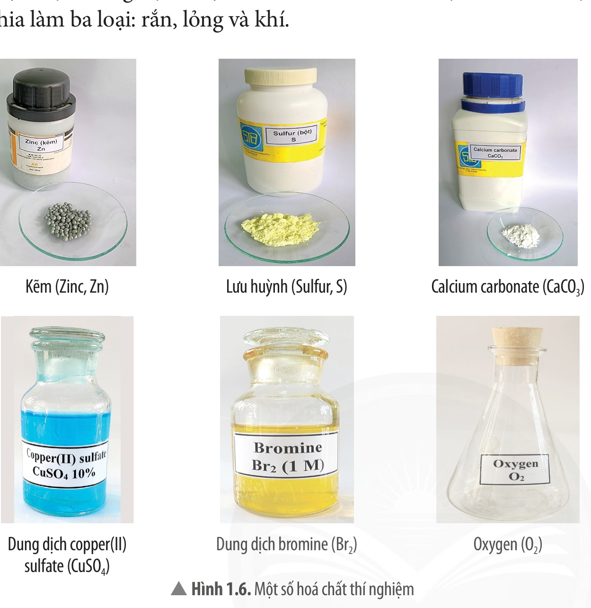
SGK_KHTN_8_CTST · trang in 9 ·
Hình 1.6
chú thích máy đọc: Hình 1.6. Một số hoá chất thí nghiệm ® ® Dựa vào tính chất và mức độ Calcium carbonate (CaC0,) | Oxygen Ï Oz; 0xygen (0;) 9ˆ Quan sá
chữ trong hình: 1ia làm ba loại: rắn, lỏng và khí. =4... (0pper(TT) sulftt CuSO, 10% Dung dịch copper(ll) sulfate (CuS0,) Lưu huỳnh (Sulfur, S) 70NEEE an 6= se | Bromine . Br; qa M) Dung dịch bromine (Br,) À Hình 1.6. Một số hoá chất th
chú thích máy đọc: Hình 1.5 } Biến áp nguồn Thiết bị đo điện gồm ampe kế và vôn kế: ampe kế đo cường độ dòng điện, vôn kế đo hiệu. điện thế. Khi dùng ampe kế và vôn kế cần chú
chữ trong hình: ẤC -oC POWER SUPPLY3..20 để Ũ “ Ũ 24V Biến áp nguồn
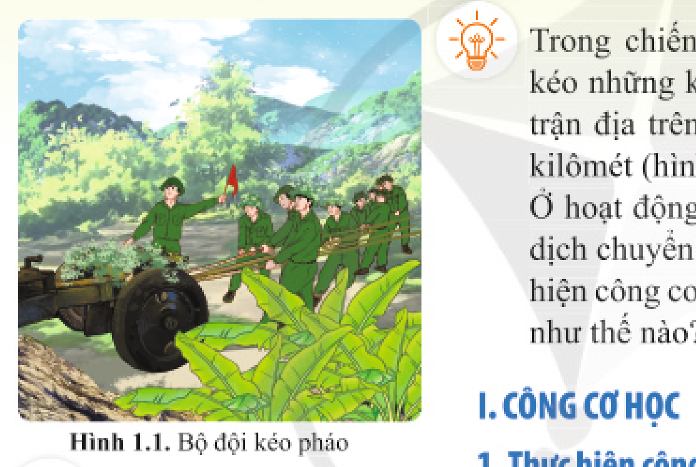
SGK_KHTN_9_CD · trang in 10 ·
Hình 1.1
chú thích máy đọc: hình 1.1). Ở hoạt động này, bộ đội đã tác dụng lực và làm địch chuyên các khẩu pháo, ta nói bộ đội đã thực hiện công cơ học. Vậy công cơ học được xác định như thể nảo? `" I. CÔNG CƠ HỌC Hì
chữ trong hình: 3: Trong chiến — kéo những Ì trận địa trết kilômẻt (hìn Ở hoạt động địch chuyền hiện công cc như thê nảo' I. CÔNG CƠ HỌC "B Thuờa li crÄ— sa Hình 1.1. Bộ đội kéo `—
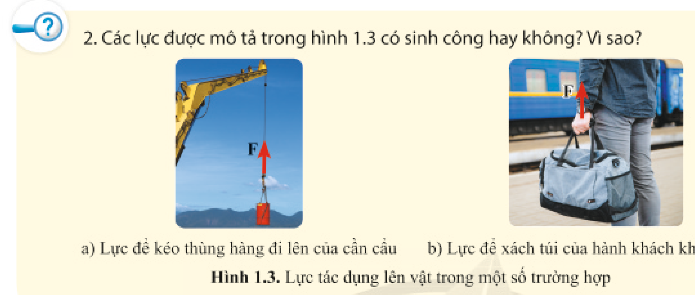
SGK_KHTN_9_CD · trang in 11 ·
Hình 1.3
chú thích máy đọc: hình 1.3 cỏ sinh công hay không? Vì sao? =4) a) Lực để kéo thùng hàng đi lên của cần cầu — b) Lực để xách túi của hảnh khách khi đứng chờ tàu Hình 1.3. Lực tác dụng lên vật trang một số trư
chữ trong hình: =2 2. Các lực được mỏ tả trong hình 1.3 cỏ sinh công hay không? Vì sao? a) Lực để kéo thùng hàng đi lên của cần câu — b} Lực để xách túi của hành khách kh Hình 1.3. Lực tác dụng lên vật trang một số trường hợp
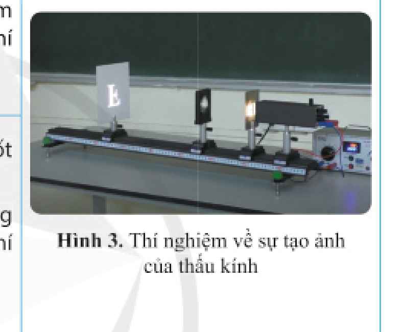
SGK_KHTN_9_CD · trang in 5 ·
Hinh 3
chú thích máy đọc: Hình 2. Thí nghiệm tán sắc ánh sáng laser nổi với nguồn điện. qua lăng kinh h1 «Được dùng để tạo ra chùm l Ì ta sáng trong một số thí mm nghiệm về ảnh sáng, Thấu kính ø Được làm từ các chấ
chữ trong hình: 1Í Hình 3. Thi nghiệm vẻ sự tạo ảnh của thâu kinh
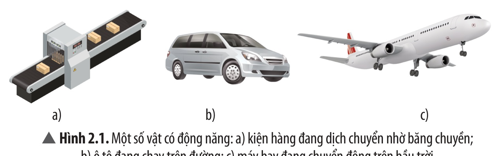
SGK_KHTN_9_CTST · trang in 10 ·
Hình 21
chú thích máy đọc: Hình 21, vật °<ê .-. chuyển động nào có động năng lớn nhất? b) Q tất sb/ À Hình 2.1. Một số vật có động năng: a) kiện hàng đang dịch chuyển nhờ băng chuyền; Giải thí. b) ô tô đang chạy tr
chữ trong hình: a) b) 9Q À Hình 2.1. Một số vật có động năng: a) kiện hàng đang dịch chuyển nhờ băng chuyền; B\ A +2 2n ~ -b¬sz +xẦna 2X 2z; Z\ 4x; hs; 32a ~ -husz2n Z2 ~x evc^na b^,, + v Ni
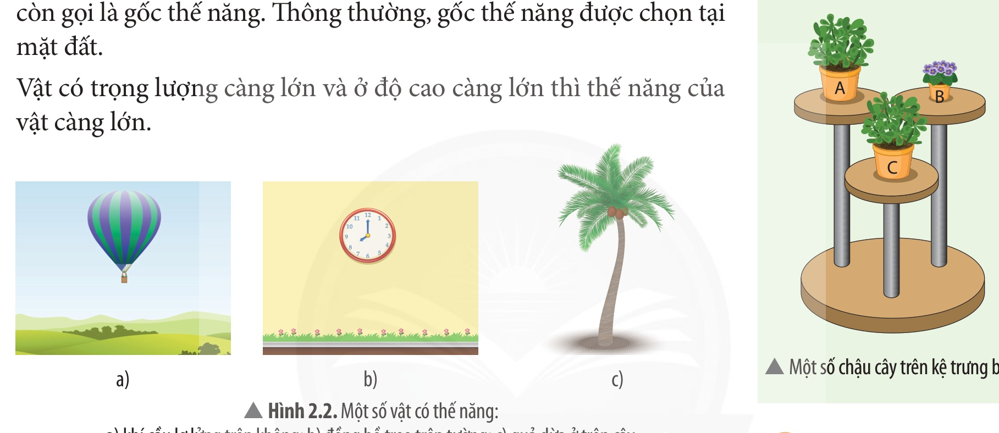
SGK_KHTN_9_CTST · trang in 11 ·
Hình 2.2
chú thích máy đọc: Hình 2.2. Một số vật có thế năng: a) khí cầu lơ lửng trên không; b) đồng hồ treo trên tường; c) quả dừa ở trên cây Thế năng W, của một vật ở gần mặt đất được xác định bởi biểu thức: chậu dậy
chữ trong hình: còn gọi là gốc thế năng. Thông thường, gốc thế năng được chọn tại mặt đất. Vật có trọng lượng càng lớn và ở độ cao càng lớn thì thế năng của vật càng lớn. 3) b) đi À Một số chậu cây trên kệ trưng È À Hình 2.2. Một số vật
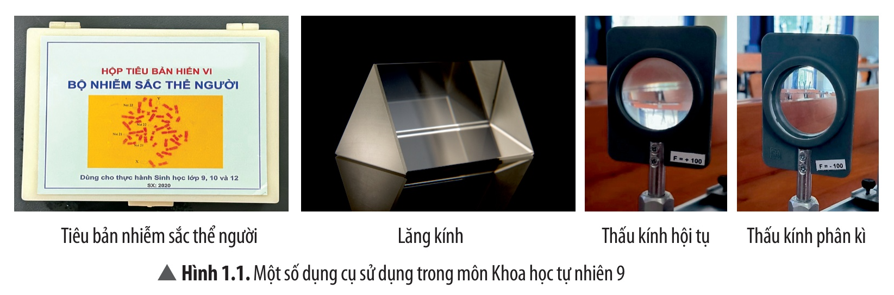
SGK_KHTN_9_CTST · trang in 6 ·
Hình 1.1
chú thích máy đọc: Hình 1.1 giới thiệu tập lĩnh vực nào trong một số dụng cụ thực hành các em sẽ sử dụng ở lớp 9. môn Khoa họctựnhiên 9. HỘP TIÊU BẢN HIẾN VI BỘ NHIỄM SẮC THẺ NGƯỜI Tiêu bản nhiễm sắc thể ngườ
chữ trong hình: BỘ NHIẼM SẮC THÊ NGƯỜI Đùng cho thực hành Sinh học lớp 9, 10 và 12 Tiêu bản nhiễm sắc thể người Lăng kính Thấukínhhộitg Thấukính phânhì À Hình 1.1. Một số dụng cụ sử dụng trong môn Khoa học tự nhiên 9
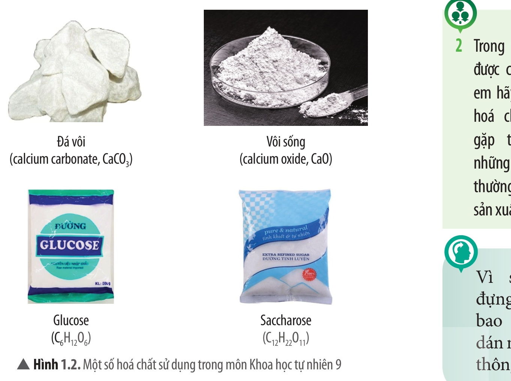
SGK_KHTN_9_CTST · trang in 7 ·
Hình 1.2
chú thích máy đọc: Hình 1.2. Một số hoá chất sử dụng trong môn Khoa học tự nhiên 9 @ @® 2 Trong số các hợp chất được dỉ ra ở Hình 1.2, em hãy cho biết những hoá chất nào thường gặp trong tự nhiên, những hoá ch
chữ trong hình: \ Đá vôi Vôi sống (caldum carbonate, CaC0,) (calcum oxide, Ca0) KL:8M 6lucose Saccharose (CH;;0,) (C;H;;0,,) AÀ Hình 1.2. Một số hoá chất sử dụng trong môn Khoa học tự nhiên 9 62) 2 Trong được ‹ em hã hoá c gặp † những t
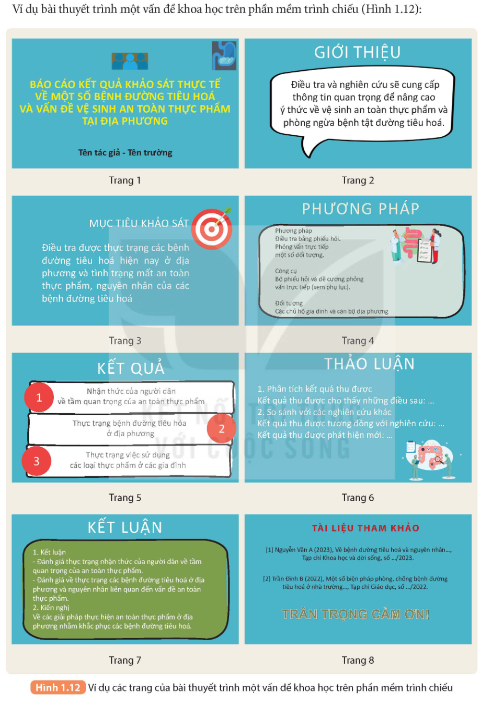
SGK_KHTN_9_KNTT · trang in 12 ·
Hình 1.12
chú thích máy đọc: Hình 1.12): - LẠ. (& BÁO CÁO KẾT QUẢ KHẢO SÁT THỰC TẾ Điều tra và nghiên cứu sẽ cung cấp VỀ MỘT SỐ BỆNH ĐƯỜNG TIÊU HOÁ thông tin quan trọng để nâng cao. VÀ VẤN ĐỀ VỆ SINH AN TOÀN THỰC PHẨM
chữ trong hình: Ví dụ bài thuyết trình một vấn để khoa học trên phần mềm trình chiếu (Hình 1.12): " LẠ. (& BÁO CÁO KẾT QUẢ KHẢO SÁT THỰC TẾ Điều tra và nghiên cứu sẽ cung cấp VỀ MỘT SỐ BỆNH ĐƯỜNG TIÊU HOÁ thông tin quan trọng để nâng ca
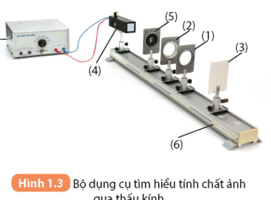
SGK_KHTN_9_KNTT · trang in 7 ·
Hình 1.3
chú thích máy đọc: Hình 1.3) bao gồm: thấu kính hội tụ (1), thấu kính phân kì (2), màn chắn (3) và vật sáng được tạo ra bằng cách chiếu sáng từ đèn (4) qua khe hình chữ F (5). Để dịch chuyển vật sáng, thấu k